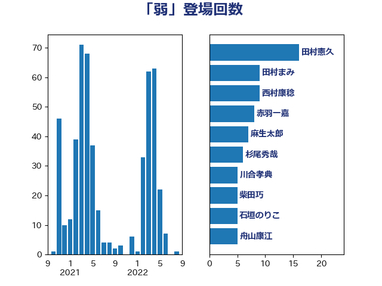

単語「弱」

| 田村憲久 | 自由民主党 | 16 回 |
| 田村まみ | 国民民主党 | 9 回 |
| 西村康稔 | 自由民主党 | 9 回 |
| 赤羽一嘉 | 公明党 | 8 回 |
| 麻生太郎 | 自由民主党 | 7 回 |
| 杉尾秀哉 | 立憲民主党 | 6 回 |
| 川合孝典 | 国民民主党 | 5 回 |
| 柴田巧 | 日本維新の会 | 5 回 |
| 石垣のりこ | 立憲民主党 | 5 回 |
| 舟山康江 | 国民民主党 | 5 回 |
| 古屋範子 | 公明党 | 4 回 |
| 塩田博昭 | 公明党 | 4 回 |
| 宮本徹 | 日本共産党 | 4 回 |
| 小沼巧 | 立憲民主党 | 4 回 |
| 斉藤鉄夫 | 公明党 | 4 回 |
| 櫻井周 | 立憲民主党 | 4 回 |
| 清水真人 | 自由民主党 | 4 回 |
| 湯原俊二 | 立憲民主党 | 4 回 |
| 玄葉光一郎 | 立憲民主党 | 4 回 |
| 田島麻衣子 | 立憲民主党 | 4 回 |
| 田村貴昭 | 日本共産党 | 4 回 |
| 稲富修二 | 立憲民主党 | 4 回 |
| 井原巧 | 自由民主党 | 3 回 |
| 堤かなめ | 立憲民主党 | 3 回 |
| 大串博志 | 立憲民主党 | 3 回 |
| 大口善徳 | 公明党 | 3 回 |
| 小沢雅仁 | 立憲民主党 | 3 回 |
| 岡本あき子 | 立憲民主党 | 3 回 |
| 打越さく良 | 立憲民主党 | 3 回 |
| 新妻秀規 | 公明党 | 3 回 |
| 杉久武 | 公明党 | 3 回 |
| 森屋隆 | 立憲民主党 | 3 回 |
| 森田俊和 | 立憲民主党 | 3 回 |
| 清水貴之 | 日本維新の会 | 3 回 |
| 玉木雄一郎 | 国民民主党 | 3 回 |
| 舩後靖彦 | れいわ新選組 | 3 回 |
| 菅義偉 | 自由民主党 | 3 回 |
| 萩生田光一 | 自由民主党 | 3 回 |
| 阿部知子 | 立憲民主党 | 3 回 |
| 階猛 | 立憲民主党 | 3 回 |
| 上田清司 | 国民民主党 | 2 回 |
| 中川郁子 | 自由民主党 | 2 回 |
| 井出庸生 | 自由民主党 | 2 回 |
| 伊波洋一 | 無所属 | 2 回 |
| 伴野豊 | 立憲民主党 | 2 回 |
| 勝部賢志 | 立憲民主党 | 2 回 |
| 古川元久 | 国民民主党 | 2 回 |
| 吉川沙織 | 立憲民主党 | 2 回 |
| 嘉田由紀子 | 無所属 | 2 回 |
| 坂本哲志 | 自由民主党 | 2 回 |
| 大塚耕平 | 国民民主党 | 2 回 |
| 小林鷹之 | 自由民主党 | 2 回 |
| 小西洋之 | 立憲民主党 | 2 回 |
| 山口那津男 | 公明党 | 2 回 |
| 朝日健太郎 | 自由民主党 | 2 回 |
| 本田太郎 | 自由民主党 | 2 回 |
| 柚木道義 | 立憲民主党 | 2 回 |
| 梅村みずほ | 日本維新の会 | 2 回 |
| 梶山弘志 | 自由民主党 | 2 回 |
| 森屋宏 | 自由民主党 | 2 回 |
| 池下卓 | 日本維新の会 | 2 回 |
| 泉田裕彦 | 自由民主党 | 2 回 |
| 片山大介 | 日本維新の会 | 2 回 |
| 牧山ひろえ | 立憲民主党 | 2 回 |
| 田村智子 | 日本共産党 | 2 回 |
| 礒崎哲史 | 国民民主党 | 2 回 |
| 福山哲郎 | 立憲民主党 | 2 回 |
| 緑川貴士 | 立憲民主党 | 2 回 |
| 美延映夫 | 日本維新の会 | 2 回 |
| 藤巻健太 | 日本維新の会 | 2 回 |
| 辻元清美 | 立憲民主党 | 2 回 |
| 近藤和也 | 立憲民主党 | 2 回 |
| 鈴木敦 | 国民民主党 | 2 回 |
| 長浜博行 | 無所属 | 2 回 |
| こやり隆史 | 自由民主党 | 1 回 |
| 三谷英弘 | 自由民主党 | 1 回 |
| 上月良祐 | 自由民主党 | 1 回 |
| 上杉謙太郎 | 自由民主党 | 1 回 |
| 下村博文 | 自由民主党 | 1 回 |
| 下野六太 | 公明党 | 1 回 |
| 中島克仁 | 立憲民主党 | 1 回 |
| 中川正春 | 立憲民主党 | 1 回 |
| 中野英幸 | 自由民主党 | 1 回 |
| 丸川珠代 | 自由民主党 | 1 回 |
| 井上信治 | 自由民主党 | 1 回 |
| 井上英孝 | 日本維新の会 | 1 回 |
| 今枝宗一郎 | 自由民主党 | 1 回 |
| 伊佐進一 | 公明党 | 1 回 |
| 伊藤孝恵 | 国民民主党 | 1 回 |
| 伊藤孝江 | 公明党 | 1 回 |
| 佐藤正久 | 自由民主党 | 1 回 |
| 前原誠司 | 国民民主党 | 1 回 |
| 古賀之士 | 立憲民主党 | 1 回 |
| 吉田とも代 | 日本維新の会 | 1 回 |
| 吉田久美子 | 公明党 | 1 回 |
| 吉田宣弘 | 公明党 | 1 回 |
| 吉田統彦 | 立憲民主党 | 1 回 |
| 國重徹 | 公明党 | 1 回 |
| 城井崇 | 立憲民主党 | 1 回 |
| 城内実 | 自由民主党 | 1 回 |
| 堀井巌 | 自由民主党 | 1 回 |
| 塩村あやか | 立憲民主党 | 1 回 |
| 大野泰正 | 自由民主党 | 1 回 |
| 安江伸夫 | 公明党 | 1 回 |
| 寺田静 | 無所属 | 1 回 |
| 小宮山泰子 | 立憲民主党 | 1 回 |
| 小森卓郎 | 自由民主党 | 1 回 |
| 小池晃 | 日本共産党 | 1 回 |
| 小泉進次郎 | 自由民主党 | 1 回 |
| 山下芳生 | 日本共産党 | 1 回 |
| 山口壯 | 自由民主党 | 1 回 |
| 山崎誠 | 立憲民主党 | 1 回 |
| 山本剛正 | 日本維新の会 | 1 回 |
| 山田美樹 | 自由民主党 | 1 回 |
| 山谷えり子 | 自由民主党 | 1 回 |
| 岸田文雄 | 自由民主党 | 1 回 |
| 岸真紀子 | 立憲民主党 | 1 回 |
| 島尻安伊子 | 自由民主党 | 1 回 |
| 川田龍平 | 立憲民主党 | 1 回 |
| 市村浩一郎 | 日本維新の会 | 1 回 |
| 平山佐知子 | 無所属 | 1 回 |
| 平林晃 | 公明党 | 1 回 |
| 庄子賢一 | 公明党 | 1 回 |
| 新垣邦男 | 立憲民主党 | 1 回 |
| 木村英子 | れいわ新選組 | 1 回 |
| 末松信介 | 自由民主党 | 1 回 |
| 末松義規 | 立憲民主党 | 1 回 |
| 杉本和巳 | 日本維新の会 | 1 回 |
| 梅村聡 | 日本維新の会 | 1 回 |
| 梅谷守 | 立憲民主党 | 1 回 |
| 横沢高徳 | 立憲民主党 | 1 回 |
| 橋本聖子 | 無所属 | 1 回 |
| 櫻井充 | 自由民主党 | 1 回 |
| 武見敬三 | 自由民主党 | 1 回 |
| 武部新 | 自由民主党 | 1 回 |
| 江田憲司 | 立憲民主党 | 1 回 |
| 河野義博 | 公明党 | 1 回 |
| 泉健太 | 立憲民主党 | 1 回 |
| 浅田均 | 日本維新の会 | 1 回 |
| 浜口誠 | 国民民主党 | 1 回 |
| 深澤陽一 | 自由民主党 | 1 回 |
| 源馬謙太郎 | 立憲民主党 | 1 回 |
| 田畑裕明 | 自由民主党 | 1 回 |
| 田野瀬太道 | 無所属 | 1 回 |
| 石井啓一 | 公明党 | 1 回 |
| 石原正敬 | 自由民主党 | 1 回 |
| 石川博崇 | 公明党 | 1 回 |
| 福田達夫 | 自由民主党 | 1 回 |
| 笹川博義 | 自由民主党 | 1 回 |
| 米山隆一 | 立憲民主党 | 1 回 |
| 芳賀道也 | 国民民主党 | 1 回 |
| 菅直人 | 立憲民主党 | 1 回 |
| 葉梨康弘 | 自由民主党 | 1 回 |
| 藤岡隆雄 | 立憲民主党 | 1 回 |
| 藤田文武 | 日本維新の会 | 1 回 |
| 谷合正明 | 公明党 | 1 回 |
| 谷川とむ | 自由民主党 | 1 回 |
| 谷田川元 | 立憲民主党 | 1 回 |
| 足立康史 | 日本維新の会 | 1 回 |
| 辻清人 | 自由民主党 | 1 回 |
| 遠藤敬 | 日本維新の会 | 1 回 |
| 遠藤良太 | 日本維新の会 | 1 回 |
| 酒井庸行 | 自由民主党 | 1 回 |
| 野上浩太郎 | 自由民主党 | 1 回 |
| 野田国義 | 立憲民主党 | 1 回 |
| 鈴木俊一 | 自由民主党 | 1 回 |
| 鈴木貴子 | 自由民主党 | 1 回 |
| 青山大人 | 立憲民主党 | 1 回 |
| 青木愛 | 立憲民主党 | 1 回 |
| 音喜多駿 | 日本維新の会 | 1 回 |
| 須藤元気 | 無所属 | 1 回 |
| 高木かおり | 日本維新の会 | 1 回 |
| 高木啓 | 自由民主党 | 1 回 |
| 高橋光男 | 公明党 | 1 回 |
| 高橋克法 | 自由民主党 | 1 回 |
| 高橋千鶴子 | 日本共産党 | 1 回 |